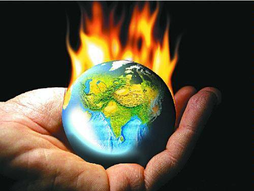

Weather and Climate App
Global Warming

Global warming is within the Earth's surface and atmosphere gradually rising temperatures mean a rise in world temperatures. Rays radiating out from the (short wave radiation) is the Earth's surface some of which fell onto the Earth's surface that has absorbed some heat wave (long wave radiation) or infrared (infrared radiation) converted. The heat wave in atmospheric carbon dioxide (CO2), methane (CH4) ,Memorial Truck oxide (N2O) gas is absorbed by humans, animals or plants to live a fairly balanced thermal achieved. The gas warm, increasing the greenhouse world with features like greenhouse gases (Greenhouse Gases-GHGs) said. However, since the time of the rise of the industrial age factories, motor vehicles cumulative coal, gasoline, diesel, natural gas, fossil fuels such as the increase in consumption each year from atmospheric CO2, including right house was inordinately large amounts of gas. This method take in air heat pump ground or re-broadcast will be large, and a rise in global temperatures now. Earth's temperature is more than 140 years ago (1) degrees Fahrenheit (0.5 degrees Centigreat) warmer expensive. Corrupts climate change due to global warming and global warming also a rise in greenhouse gas emissions. Climate status change is the great challenge facing humans today an .IPCC (Inter governmental Panel on Climate Change) fourth assessment findings report, climate change, economic growth, sustainable full time and such as near a danger turned into threatening scientific the findings are described. In addition, if the greenhouse gas per broadcast is currently continue to rise as before, but with the advent of industrial rose at double the rate of world could begin this century, average temperatures rise by 3 degrees Shelf defeated will encounter. The rising sea level, changing planting season, edge weather events such as storm, flood and drought frequency and will become serious consequences such as increased concentrations . Thus dangerous the presence of greenhouse gases in the atmosphere stabilize the overall duty of all mankind today.
Next
Back to disasters